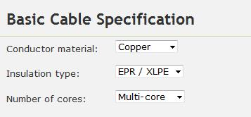
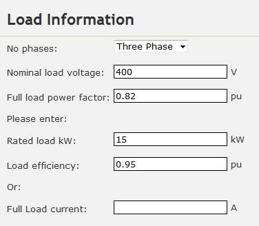
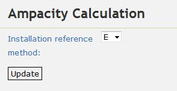
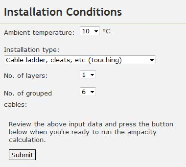
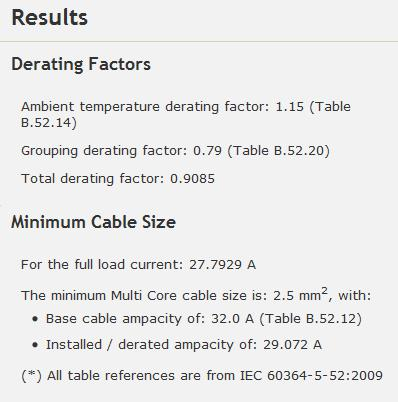
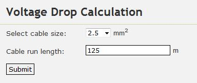
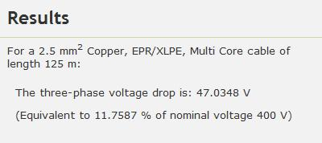
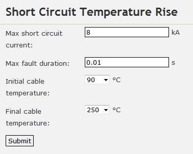
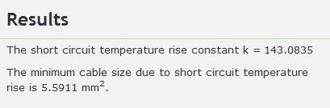
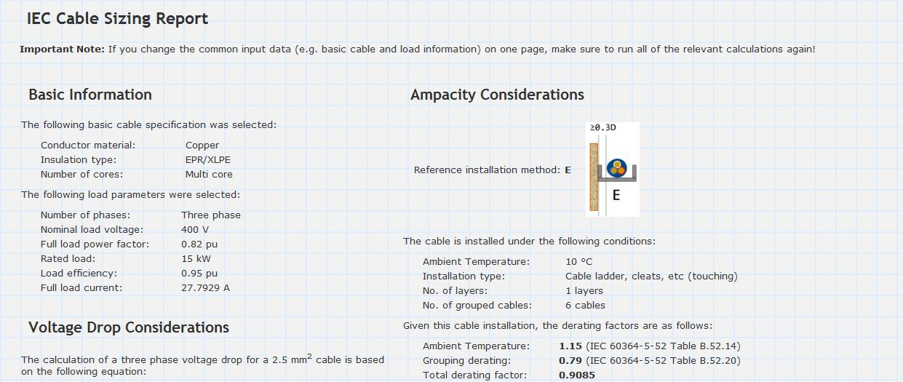

In this tutorial, we will size a cable for a 3-phase, 400V, 15kW load with power factor 0.82 and efficiency 0.95. A 3C cable is selected with copper conductors and XLPE insulation. The cable will be run from a switchboard to the load via cable ladder at an ambient temperature of 45°C. The cable will be installed on a single layer of cable ladder next to 5 other cables (i.e. touching). The cable run is expected to be approximately 125m and the maximum allowable voltage drop is 5%. The maximum prospective fault current is 8kA for 0.01s.
We'd first like to determine the minimum cable size such that the cable's ampacity (or current carrying capacity) is sufficient to continuously supply the load without being damaged.
Firstly, we enter in the following basic cable parameters:
Next, we enter in the following load information (note that given this data, Cablesizer will automatically calculate the full load current):
We then enter in the installation reference method "E", which corresponds to cable installations in air (including cable ladder) and press the update button:
Lastly, we fill in the cable installation conditions:
Pressing the submit button yields the following results:
The results show that the minimum cable size based on ampacity considerations is a 2.5 mm2.
Next we'd like to size the cable so that the voltage drop across the cable is less than the 5% maximum allowable voltage drop criteria specified earlier.
When we click on the "Volt Drop" link, the basic cable and load information that we filled in earlier is retained, so we don't have to enter it in again. We'd first like to check what the voltage drop is at the minimum cable size calculated earlier (2.5 mm2). So we enter in the following information:
Pressing the submit button yields the following results:
The results show that a 2.5 mm2 cable has a calculated volt drop of 11.7587%, higher than our maximum allowable volt drop of 5%. Therefore a 2.5 mm2 cable is not an appropriate choice for this application, and we must try larger cable size options.
Repeating the calculation again for 6 mm2 and 10 mm2 cables yields voltage drops of 4.9734% and 2.9575% respectively. Both are below the maximum allowable voltage drop of 5%, but the 6 mm2 cable is marginal and the 10 mm2 would be a more conservative option.
Next we'd like to check that the worst case temperature rise during a short circuit will not damage the cable. We assume that the XLPE cable has an initial operating temperature of 90°C and a final temperature of 250°C. We enter the following information:
Pressing the submit button yields the following results:
The results show that to withstand the worst case short circuit temperature rise, the minimum cable size must be 5.5911 mm2.
Based on the results of the above calculations, we can conclude that a 10 mm2 would be the most suitable choice.
Finally, we can click on the "Report" link and print out the cable sizing report (see the snippet below):
